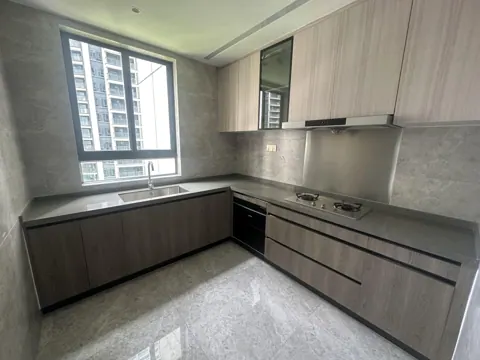
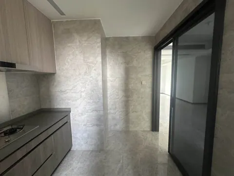
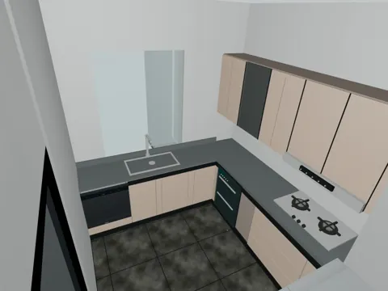
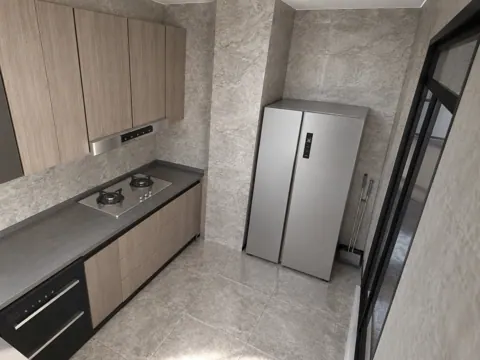
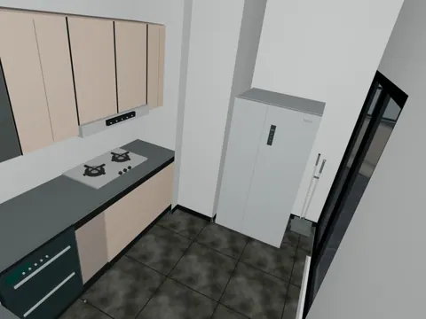
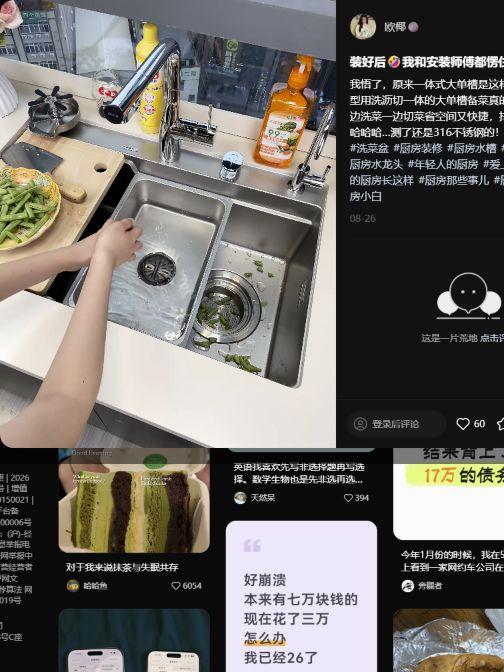
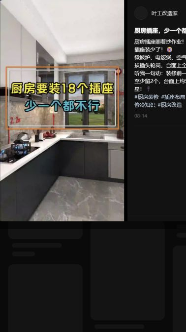

SPACE 05
05 厨房
现状、需求与预期效果，放在一起讨论。
05 厨房装修需求
所有尺寸均为参考；施工、定制、开孔和下单以现场实测、实物安装要求及确认图纸为准。列入配置不等于已经购买。
现场实拍


望向水槽方向（北）


望向冰箱方向（南）
DESIGN INTENT
预期效果
仅展示需求文档中列出的效果图。

厨房望向水槽（北）


厨房望向水槽（北）


厨房望向冰箱（南）


厨房望向冰箱（南）
功能与布局
- 清洗区：保留现有水槽，不拆换为一体化大单槽；按使用需要单独选购配件。
- 洗碗机：嵌入靠墙、靠近水槽的台面下柜体。
硬装与定制
- 洗碗机嵌装：设备开孔、柜门开启空间、散热及管线位置，均按最终选购产品复核。
家具与设备
“否”按成品选购；“待确认”不代表已决定定制。尺寸以现场实测及最终确认图纸为准。
商品图、规格图及购买链接均为选型参考，不限定购买渠道或最终款式。若有同款且性价比更高的选择、风格更合适的家具，或因现场尺寸、安装条件等客观原因需要调整，可提出替代方案，说明差异及更换原因，经业主确认同意后方可更换。
| 项目 | 数量 | 是否定制 | 参考尺寸 / 选型要求 | 商品图 / 规格参考 | 购买链接（参考） | 备注 |
|---|---|---|---|---|---|---|
| 洗碗机 | 1 台 | 是 | 美的 V6 Pro；机身参考宽 595 × 深 500 × 高 595 mm；图示柜内开孔宽 555～565 mm、深 ≥520 mm、高 ≥600 mm，柜体外宽 600 mm | 实拍、规格 | 淘宝 | 嵌入式，机身外形与柜内开孔口径不同；侧面管线孔图示直径 50 mm，须按最终安装图复核 |
| 电饭煲 | 1 个 | 否 | 型号、尺寸待核 | 待选 / 暂无资料 | 先不买 | - |
| 微波炉 | 1 个 | 否 | 型号、尺寸待核 | 待选 / 暂无资料 | 先不买 | - |
| 砧板 | 1 件 | 否 | 朝日牌，长度大于 42 以便架在水槽 | 实拍 | 淘宝 | - |
| 消毒柜 | 1 台 | 否 | 型号、尺寸待核 | 待选 / 暂无资料 | 购房赠送 | 赠送设备，现场盘点 |
| 灶具 | 1 台 | 否 | 型号、尺寸待核 | 待选 / 暂无资料 | 待确认 | 需自购，待现场复尺 |
| 抽油烟机 | 1 台 | 否 | 型号、尺寸待核 | 待选 / 暂无资料 | 购房赠送 | 赠送设备，现场盘点 |
| 冰箱 | 1 台 | 否 | 美的 571 L 参考款；宽 895 × 深 690 × 高 1764 mm，冷藏 359 L / 冷冻 212 L，一级能效 | 实拍、规格 | 购房赠送 | 赠送设备，现场盘点 |


水电
用电设备
基础照明方案待定；本次不新增柜底灯。
- 冰箱、洗碗机、微波炉、消毒柜及烟机分别核对供电。
- 洗碗机靠近水槽接入进排水，接口保持可维护。
- 台面小家电使用位至少留 6 个，含电饭煲使用位；微波炉另列，避免重复。
插座、用电设备和开关统一列在下表；同一设备的供电只计一次。用电设备采用插座还是直接接线随最终选型确定，安装高度写在位置要求中；开关按面板位置计数，不按按键数计。数量包含暂定项，现有可复用位置现场核对。
| 类别 | 设备 / 用途 | 数量 | 位置 / 要求 | 状态 |
|---|---|---|---|---|
| 插座 | 冰箱 | 1 个 | 独立供电 | 配置 |
| 插座 | 洗碗机 | 1 个 | 水槽旁台面下 | 配置 |
| 插座 | 微波炉 | 1 个 | 型号待选 | 需求 |
| 插座 | 消毒柜 | 1 个 | 核对赠送设备实物 | 需求 |
| 插座 | 抽油烟机 | 1 个 | 核对已有供电 | 现有待核 |
| 插座 | 台面小家电备用位 | 6 个 | 至少留 6 个，含电饭煲及其他小家电使用位；微波炉已另列，具体位置按台面布局确认 | 需求已确认 |
| 用电设备 | 厨房 · 基础照明 | 1 组 | 基础照明独立，本次不新增柜底灯。 | 暂定 |
| 开关 | 厨房 · 照明开关 | 1 处 | 具体位置待定位 | 数量已由业主确认 |
汇总：插座 11 个，另需供电的设备 1 项，照明开关 1 处。 用电设备后续即使采用插座供电，也不再重复增加同一项需求。
灶具已确认不需要市电，本次不新增柜底灯；电饭煲已包含在 6 个台面小家电使用位内，不重复计数。
用水设备
按设备端需求记录，上水按用水设备 / 用水位计，下水按排水接入计；冷热水同时需要时仍为一个用水位，但施工须分别记录冷、热水接口。数量包含现有可复用接口，不直接等于新增管口；共用支路不省略设备需求。
| 设备 / 用途 | 上水需求 | 下水需求 | 位置 / 说明 |
|---|---|---|---|
| 现有水槽 | 1 处；冷 / 热水配置现场核对 | 1 处 | 保留现有水槽，现有接口及可复用情况现场盘点 |
| 洗碗机 | 1 处；进水类型按型号 | 1 处 | 可与水槽共用支路，设备接口分别保留 |
当前计入：上水 2 处，下水 2 处，含表内暂定项。 待型号确认的附加接口暂未计入，不代表不需要。地漏、雨水、空调冷凝水及其他附加排水另行现场盘点；管径、阀门和支路按最终设备与现场条件确定。
待确认事项
| 区域 / 专项 | 待确认内容 | 对设计及报价的影响 |
|---|---|---|
| 待补充 | 按现场复尺及选型结果补充 | 待确认 |
灵感与风格参考

一体化大单槽
